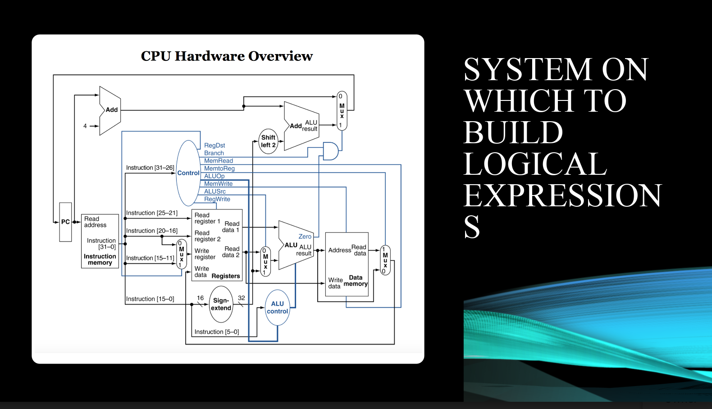

Independent / Research / Funded Projects

VAST 2017: MC3
Solution created in collaboration with Bartosz Kupiec, Andrew Burks, Timothy Luciani, and Dr. Elisabeta Marai (faculty advisor) for VAST mini-challenge 3. We dealt with multispectral satellite data to produce the small multiples and linked
semantic zooming.
(Summer 2017)
explore
explore

Hybrid VR Experience
Project funded by UIC Honors College, with Dr. Mitchell Theys as project advisor. Developed VR application with Oculus Rift DK2 that recreated UIC's East Campus with 3D SketchUp mass models provided by the
Office of Facility and Space planning. Optimized models with 3DS Max then piped into Unreal Engine 4 and later Unity for users to visualize East Campus (provides scale and direction).
(Fall 2015 - Spring 2016)
manual final report
(Fall 2015 - Spring 2016)
manual final report

MIPS Assembler/CPU
Developed a MIPS assembler that supports instructions (written in C) and Data Path (designed in Verilog) to take MIPS assembly and feed it into my custom designed CPU model. In class presentation was done explaining the creation process, project was done under the guidance of Professor Paolo Vinella.
(Fall 2016)
final presentation
final presentation
Academia (Course) Projects

cs426
Video Game Design and Implementation (Spring 2017)
"Escape Nazism as a Deaf Citizen" done in collaboration with Cameron Reuss and Michael Irizarry.
design document final presentation controls initial pitch level design mechanics discussion (informal)
"Escape Nazism as a Deaf Citizen" done in collaboration with Cameron Reuss and Michael Irizarry.
design document final presentation controls initial pitch level design mechanics discussion (informal)
ece491
Mechatronic Systems Design (Spring 2017)
Final project and various labs done in collaboration with Lisa Soderlind, Kevin Huxhold, and Mohamed Eljali. Developed autonomous vehicle that implemented a custom-made PCB (using Altium), a Proportional-Derivative controller for line following (in C), and 3D printed holders to house the microcontroller.
final presentation final report
Final project and various labs done in collaboration with Lisa Soderlind, Kevin Huxhold, and Mohamed Eljali. Developed autonomous vehicle that implemented a custom-made PCB (using Altium), a Proportional-Derivative controller for line following (in C), and 3D printed holders to house the microcontroller.
final presentation final report

ece467
VLSI Design (Fall 2017)
Introduction to Very-Large-Scale Integration. Tools used: cadence, virtuoso, and pspice.
final project mini-project 1 mini-project 2
Introduction to Very-Large-Scale Integration. Tools used: cadence, virtuoso, and pspice.
final project mini-project 1 mini-project 2

ece452
Robotics, Algorithms, and Control (Spring 2017)
Final project done in collaboration with Tasqin Zehra and Raphael Jabbar. Each doc includes a link to video of our line following robot.
final project pt1 final project pt2
Final project done in collaboration with Tasqin Zehra and Raphael Jabbar. Each doc includes a link to video of our line following robot.
final project pt1 final project pt2

ece367
Microprocessor-based Design (Fall 2016)
Final project done in collaboration with Tasqin Zehra.
final project proposal
Final project done in collaboration with Tasqin Zehra.
final project proposal

ece340
Electronics I (Fall 2016)
Final (research) project done in collaboration with Tasqin Zehra and Raphael Jabbar. We were interested in new "forms" electronics can take. We found quantum computing to be very exciting so we researched current methedology / future implementations.
final presentation
Final (research) project done in collaboration with Tasqin Zehra and Raphael Jabbar. We were interested in new "forms" electronics can take. We found quantum computing to be very exciting so we researched current methedology / future implementations.
final presentation